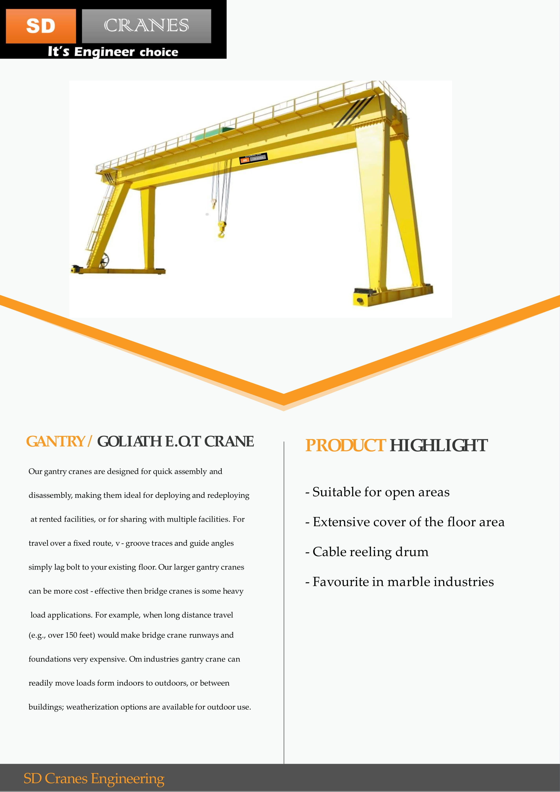

A single girder crane is used for light duty weight and short period work. It has 20 tons lifting capacity normally and can work maximum for 6 hours. Actually, it is most suitable for 1 to 20 ton lifting capacity. Single girder EOT crane is useful for short time operation and low duty load.
About Us
Incepted in the year 2018, SD Cranes Engineering is a distinguished Manufacturer, Wholesaler and Trader offering an enormous consignment of Electric Wire Rope Hoist, EOT Crane etc.
Crane operates four business segments, each of which designs and manufactures highly engineered industrial products. Our businesses are all known for proprietary and differentiated technology, quality and reliability, deep vertical expertise, and responsiveness to unique customer needs. We serve some of the most demanding end markets, from aerospace & defense, bill validation and counterfeit detection, and oil & gas, to chemical, pharmaceutical, transportation, and many others.


Double Girder EOT Crane have 2 Main Girders across the span. It consist of Electric Hoist travelling on lower flange of Main Girder and not required rail for cross traveling. It consist of a crab mechanism travels above both girders run over cross travel rails with platform to maintain all parts of crab.

The Electric wire rope hoist is one of the most in-demand products where there is a need for lifting weights up to 20 tons. It is one commonly purchased product from LOADMATE. The assurance of quality offered by us has made the LOADMATE wire rope hoist quite popular among users.

Our range is highly effective and is widely used for shifting and lifting of heavyweight load. These machines are totally cost effective and are supplied as per the various specifications provided by our clients. All motors and components are individually checked for functionality.

The chain hoist is a kind of manual lifting tool that is easy to use and easy to carry. It can be used for lifting heavy objects in newly built workshops, docks and open-air places without power supply. The chain hoist can also be used with a running trolley. Walk on the track.

A gantry crane is a type of overhead crane that uses legs to support the bridge, trolley, and hoist. These legs travel on along the ground on wheels or ride on rails implanted in the ground. A gantry crane is typically used for outdoor applications or for lifting capability below existing overhead bridge crane systems.

A jib crane is a type of overhead lifting device that is frequently used in smaller work cell areas for unique and repetitive lifting tasks. Jib cranes are exceptionally adaptable and can be paired with overhead bridge cranes to maximize production. Jib cranes can lift and move loads weighing up to 30,000 pounds

What is a goods lift? Goods lifts are designed to move goods, palettes and heavy loads between two or more floors, they can also function as bin/bike lifts. They are traditionally seen in back of house applications, such as catering environments, moving stock in warehouses and retail storage areas.